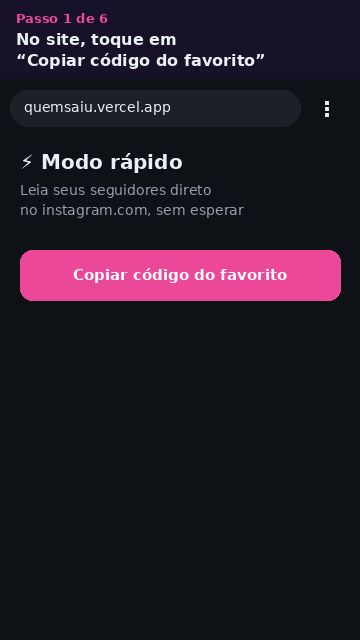

Quem Saiu?
Descubra quem não te segue de volta e quem deixou de te seguir. Sem senha, sem login: tudo fica no seu aparelho.
Em 3 passos
Como funciona
-
1
Peça seus dados ao Instagram
No app do Instagram, peça o arquivo de Seguidores e seguindo em formato JSON. É grátis e oficial.
-
2
Baixe o arquivo .zip
O Instagram avisa por e-mail ou notificação quando o arquivo fica pronto (de minutos a algumas horas). Baixe no celular ou no computador.
-
3
Envie aqui
Toque em Enviar arquivo, escolha o .zip na pasta Downloads e pronto: a lista aparece na hora.
Funciona no celular, sem instalar nada.
Modo rápido: sem esperar o arquivo da Meta
Lê suas listas direto do instagram.com, já logado, em poucos minutos. Tudo roda no seu navegador: nenhuma senha ou dado passa pelo Quem Saiu?. O código é aberto no GitHub.

Copie o código
Toque em “Copiar código do favorito”.
Crie um favorito
No Chrome, adicione qualquer página aos favoritos (⋮ > estrela).
Cole o código no favorito
Abra ⋮ > Favoritos, toque e segure o favorito novo > Editar. Nome: quemsaiu. Em URL, apague tudo e cole o código. Salve.
Entre no Instagram pelo Chrome
Abra instagram.com no Chrome (não no app) e entre na sua conta.
Abra o favorito
Toque na barra de endereço, digite quemsaiu e toque no favorito que aparece com a estrela (não na busca).
Espere a leitura
Espere a leitura terminar com a aba aberta.
Mostre a barra de favoritos
Aperte Ctrl+Shift+B.
Arraste o botão
Arraste o botão “⚡ Quem Saiu? – modo rápido” para a barra.
Use no Instagram
Abra instagram.com, entre na sua conta e clique no favorito.
Travas de segurança
- Lê em lotes de 25 com pausas aleatórias.
- Faz uma pausa maior a cada 10 consultas.
- Se o Instagram pedir para esperar, para e retoma sozinho.
- “Deixar de seguir” é um clique por pessoa, com 40 s entre um e outro e no máximo 100 por dia.
- Salva a lista no seu navegador para mostrar quem deixou de te seguir na próxima vez.
O Instagram não gosta de automação. Use com calma: se aparecer aviso de ação bloqueada, pare e espere 24 h. Nunca cole no navegador códigos de sites que você não confia.
Passo 1
Peça seus dados ao Instagram, em JSON.
Leva um minuto para pedir. O Instagram avisa quando o arquivo fica pronto.
Como baixar seus dados do Instagram (2 min)
Abra seu perfil
Abra o app do Instagram e vá no seu perfil.
Central de Contas
Toque no menu ☰ (canto superior direito) > Central de Contas.
Baixar suas informações
Toque em Suas informações e permissões > Baixar suas informações.
Escolha só uma parte
Toque em Baixar ou transferir informações > escolha sua conta > Algumas das suas informações.
Marque “Seguidores e seguindo”
Em Conexões, marque só “Seguidores e seguindo” > Avançar.
Escolha JSON, não HTML
Escolha Baixar no dispositivo. Intervalo de datas: Desde o início. Formato: JSON (não HTML). Qualidade de mídia pode ficar baixa.
Crie os arquivos
Toque em Criar arquivos.
Baixe quando ficar pronto
Volte em Central de Contas > Baixar suas informações e toque em Baixar (ou abra o link do e-mail). O Instagram pode pedir sua senha só para confirmar: isso é no site oficial do Instagram, não aqui.
Ache o .zip
O .zip vai para a pasta Downloads (Android: app Arquivos > Downloads; iPhone: app Arquivos > Downloads). Não precisa descompactar.
Envie aqui
Volte aqui, toque em “Dados atuais” e escolha o .zip.
Abra o Instagram no navegador
Acesse instagram.com e entre na sua conta.
Central de Contas
Clique em Mais (☰) > Central de Contas.
Baixar suas informações
Clique em Suas informações e permissões > Baixar suas informações.
Escolha só uma parte
Clique em Baixar ou transferir informações > escolha sua conta > Algumas das suas informações.
Marque “Seguidores e seguindo”
Em Conexões, marque só “Seguidores e seguindo” > Avançar.
Escolha JSON, não HTML
Escolha Baixar no dispositivo. Intervalo de datas: Desde o início. Formato: JSON (não HTML). Qualidade de mídia pode ficar baixa.
Crie os arquivos
Clique em Criar arquivos.
Baixe quando ficar pronto
Volte em Central de Contas > Baixar suas informações e clique em Baixar (ou abra o link do e-mail). O Instagram pode pedir sua senha só para confirmar: isso é no site oficial do Instagram, não aqui.
Ache o .zip
O .zip vai para a pasta Downloads do computador. Não precisa descompactar.
Envie aqui
Volte aqui e arraste o .zip para a área “Dados atuais”.
Dica: para ver quem deixou de te seguir, guarde esse .zip. Da próxima vez, baixe um novo e envie os dois.
Passo 2
Envie o .zip ou os arquivos .json.
Os arquivos são lidos aqui mesmo, no seu aparelho. Nada é enviado.
Dados atuais
Toque para escolher o .zip (pasta Downloads)Arraste o .zip aqui ou clique para escolher
Também aceita followers_1.json, followers_2.json… e following.json.
Dados antigos
Toque para escolher o .zip (pasta Downloads)Arraste o .zip aqui ou clique para escolher
Para ver quem deixou de seguir. Um export de antes, nos mesmos formatos: .zip ou .json.
O exemplo usa contas inventadas, para você ver como funciona antes de baixar seus dados.
Passo 3
Seus resultados.
Abra cada perfil e decida. Marque quem você já resolveu.
Nada por aqui ainda
Envie seus dados atuais acima, ou toque em “Testar com exemplo”.
Envie os dados antigos para ver esta lista
O Instagram não informa quem deixou de te seguir. Envie um export antigo em “Dados antigos (opcional)”: comparando com o atual, dá pra ver quem saiu e quem chegou. Não tem um? Guarde o .zip de hoje e, daqui a algumas semanas, baixe um novo e envie os dois.
Enviar dados antigosModo deixar de seguir
Um perfil por vez. “Abrir próximo” abre o próximo perfil não marcado numa nova aba e já marca como resolvido. O Instagram limita quantas pessoas você pode deixar de seguir por hora. Vá com calma (algo como 100–150 por dia) para não ter a conta bloqueada temporariamente.
Privacidade e perguntas